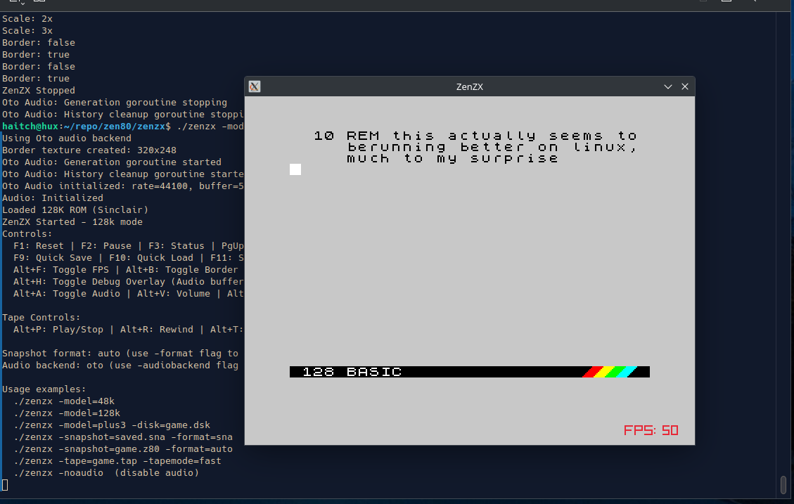
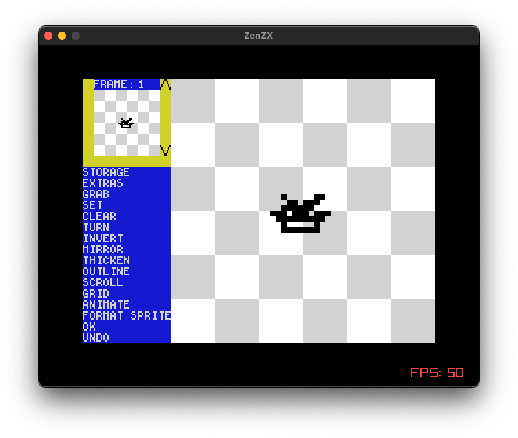
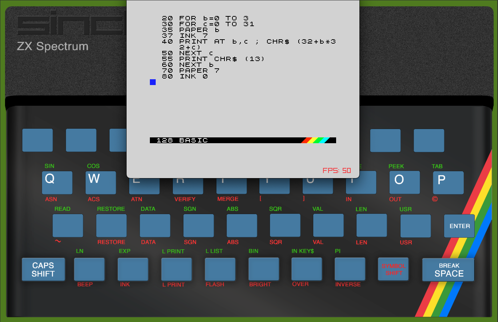
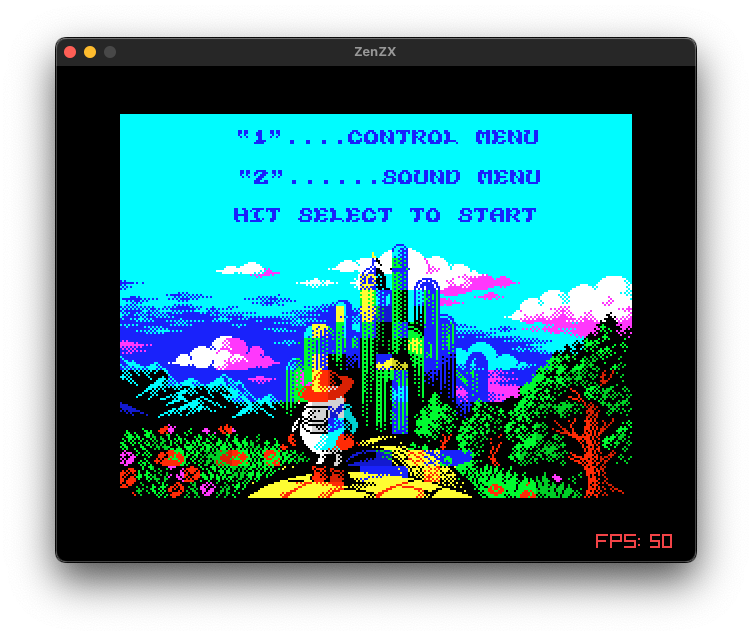

48K to +3, one emulator, one Z80 core underneath
A ZX Spectrum emulator in Go, built on the zen80 Z80 CPU core. Emulates the 48K, 128K, +2, and +3 models (including the +3 floppy disc controller), with tape and snapshot support.
In action



